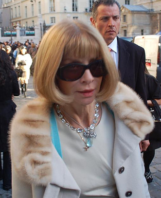
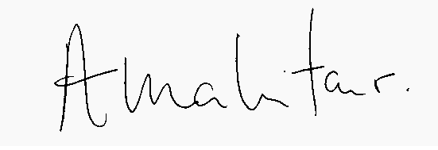

𝔸nna 𝕎intour
Career
From fashion to journalism
"I think my father really decided for me that I should work in fashion," she recalled in The September Issue. He arranged for his daughter's first job, at the influential Biba boutique, when she was 15. The next year, she left North London Collegiate and began a training program at Harrods. At her parents' behest, she also took fashion classes at a nearby school. Soon she gave them up, saying, "You either know fashion or you don't." Another older boyfriend, Richard Neville, gave her her first experience of magazine production at his popular and controversial Oz. In 1970, when Harper's Bazaar UK merged with Queen to become Harper's & Queen, Wintour was hired as one of its first editorial assistants, beginning her career in fashion journalism. She told her co-workers that she wanted to edit Vogue. While there, she discovered model Annabel Hodin, a former North London classmate. Her connections helped her secure locations for innovative shoots by Helmut Newton, Jim Lee and other trend-setting photographers. One recreated the works of Renoir and Manet using models in go-go boots. After chronic disagreements with her rival, Min Hogg, she quit and moved to New York with her boyfriend, freelance journalist Jon Bradshaw.
New York City
In her new home, she became a junior fashion editor at Harper's Bazaar in New York City in 1975. Wintour's innovative shoots led editor Tony Mazzola to fire her after nine months. She was introduced to Bob Marley by one of Bradshaw's friends, and disappeared with him for a week. A few months later, Bradshaw helped her get her first position as a fashion editor, at Viva, a women's adult magazine started by Kathy Keeton, then wife of Penthouse publisher Bob Guccione. She has rarely discussed working there, due to that connection. This was the first job at which she was able to hire a personal assistant, which began her reputation as a demanding and difficult boss. In late 1978, Guccione shut down the unprofitable magazine. Wintour decided to take some time off from work. She broke up with Bradshaw and began a relationship with French record producer Michel Esteban, for two years dividing her time with him between Paris and New York. She returned to work in 1980, succeeding Elsa Klensch as fashion editor for a new women's magazine named Savvy. It sought to appeal to career-conscious professional women, who spent their own money, the readers Wintour would later target at Vogue. The following year, she became fashion editor of New York. There, the fashion spreads and photo shoots she had been putting together for years finally began attracting attention. Editor Edward Kosner sometimes bent very strict rules for her and let her work on other sections of the magazine. She learned through her work on a cover involving Rachel Ward how effectively celebrity covers sold copies. "Anna saw the celebrity thing coming before everyone else did," Grace Coddington said three decades later. A former colleague arranged for an interview with Vogue editor Grace Mirabella that ended when Wintour told Mirabella she wanted her job.
Condé Nast
She went to work at Vogue later when Alex Liberman, editorial director for Condé Nast, publisher of Vogue, talked to Wintour about a position there in 1983. She eventually accepted after a bidding war that doubled her salary, becoming the magazine's first creative director, a position with vaguely defined responsibilities. Her changes to the magazine were often made without Mirabella's knowledge, causing friction among the staff. She began dating child psychiatrist David Shaffer, an older acquaintance from London. They married in 1984. In 1985, Wintour attained her first editorship, taking over British Vogue after Beatrix Miller retired. Once in charge, she replaced many staffers and exerted far more control over the magazine than any previous editor had, earning the nickname "Nuclear Wintour" in the process. Those editors who were retained began to refer to the period as "The Wintour of Our Discontent." Her changes moved the magazine from its traditional eccentricity to a direction more in line with the American magazine. Wintour's ideal reader was the same woman Savvy had tried to reach. "There's a new kind of woman out there," she told the Evening Standard. "She's interested in business and money. She doesn't have time to shop anymore. She wants to know what and why and where and how." In 1987, Wintour returned to New York to take over House & Garden. Its circulation had long lagged behind rival Architectural Digest, and Condé Nast hoped she could improve it. Again, she made radical changes to staff and look, canceling $2 million worth of photo spreads and articles in her first week. She put so much fashion in photo spreads that it became known as House & Garment, and enough celebrities that it was referred to as Vanity Chair, within the industry. Those changes worsened the magazine's problems. When the title was shortened to just HG, many longtime subscribers thought they were getting a new magazine and put it aside for the real thing to arrive. Most of those subscriptions were eventually canceled, and while some fashion advertisers came over, most of the magazine's traditional advertisers pulled out. Ten months later, she finally became editor of Vogue. Under Mirabella, it had become more focused on lifestyles as a whole and less on fashion. Industry insiders worried that it was losing ground to the recently introduced American edition of Elle. After making sweeping changes in staff, Wintour also changed the style of the cover pictures. Mirabella had preferred tight head shots of well-known models in studios; Wintour's covers showed more of the body and were taken outside, like those Diana Vreeland had done years earlier. She used less well-known models, and mixed inexpensive clothes with the high fashion: the first issue she was in charge of, November 1988, featured a Peter Lindbergh photograph of 19-year-old Michaela Bercu in a $50 pair of faded jeans and a bejeweled jacket by Christian Lacroix worth $10,000. It was the first time a Vogue cover model had worn jeans (Bercu was originally supposed to have worn the skirt that coordinated with the jacket, but she had gained some weight and it didn't fit). In 2012, Wintour reflected on the cover:
It was so unlike the studied and elegant close-ups that were typical of Vogue’s covers back then, with tons of makeup and major jewelry. This one broke all the rules. Michaela wasn't looking at you, and worse, she had her eyes almost closed. Her hair was blowing across her face. It looked easy, casual, a moment that had been snapped on the street, which it had been, and which was the whole point. Afterwards, in the way that these things can happen, people applied all sorts of interpretations: It was about mixing high and low, Michaela was pregnant, it was a religious statement. But none of these things was true. I had just looked at that picture and sensed the winds of change. And you can’t ask for more from a cover image than that.
Years later, Wintour admitted the photo had never been planned as the cover shot. In 2011, when Vogue put its entire archive online, Wintour was quoted as saying, "I just said, 'Well, let's just try this.' And off we went. It was just very natural. To me it just said, 'This is something new. This is something different.' The printers called to make sure that was supposed to be the cover, as they thought a mistake might have been made." In 2015 she said if she had to pick a favorite of her covers, it would be that one. "It was a leap of faith and it was certainly a big change for Vogue." "Wintour's approach hit a nerve—this was the way real women put clothes together (with the likely exception of wearing multi-thousand-dollar T-shirts(," one reviewer says. On the June 1989 cover, another model was shown in wet hair, with just a bathrobe and no apparent makeup. Photographers, makeup artists, and hairstylists got credited along with the models. In August 2014, Gigi Hadid paid tribute to Wintour's first cover.
1990s
Under her editorship, the magazine renewed its focus on fashion and returned to the prominence it had held under Vreeland. Vogue held its position as market leader against three contenders: Elle; Harper's Bazaar, which had lured away Liz Tilberis, Wintour's most prominent deputy, and Mirabella, a magazine Rupert Murdoch created for Wintour's fired predecessor. Her most serious competitor was within the company: Tina Brown, editor of Vanity Fair and later The New Yorker. At the end of the decade, another of Wintour's inner circle left to run Harper's Bazaar. Kate Betts, seen as Wintour's likely successor, had broadened the magazine's reach by commissioning stories with a more hard-news edge, about women in politics, street culture, and the financial difficulties of some major designers. She had also added the "Index" section, a few pages of tips meant to be torn out of the magazine. At staff meetings, she earned Wintour's respect as the only person who publicly challenged her. The two began to disagree about the magazine's direction. Betts felt Vogue's fashion coverage was getting too limited. Wintour in turn thought that the stories with popular culture angles Betts was assigning were beneath readers, and began pairing Betts with Plum Sykes, whom Betts reportedly detested as a "pretentious airhead." Eventually, she left, complaining to the New York Times that Wintour had not even sent her a baby gift. Wintour wrote an editor's letter that complimented Betts and wished her well.
2000s
Betts was one of several longtime editors to leave Vogue around the new millennium. A year later, Sykes, another putative successor, left to concentrate on her best-selling novels set in the city's upper classes and a screenplay. A number of other editors also left to assume the top jobs at other publications. While some of their replacements didn't last, a new group of core editors formed. The September 2004 issue was 832 pages, the largest issue of a monthly magazine ever published at that time, since exceeded by the September 2007 issue Cutler's documentary covered. Wintour also oversaw the introduction of three spinoffs: Teen Vogue, Vogue Living and Men's Vogue. Teen Vogue has published more ad pages and earned more advertiser revenue than either Elle Girl and Cosmo Girl, and the 164 ad pages in the début issue of Men's Vogue were the most for a first issue in Condé Nast history. AdAge named her "Editor of the Year" for this brand expansion. Queen Elizabeth II appointed her Officer of the Order of the British Empire (OBE) in the 2008 Birthday Honours. That year was generally difficult, as the economy worsened. After ruffling feathers at the Milan shows in February, the April issue's cover image of LeBron James and Gisele Bündchen brought criticism for its evocation of racial stereotypes. The next month a lavish Karl Lagerfeld gown she wore to the Met's Costume Institute Gala was called "the worst fashion faux pas of 2008." In the fall, Vogue Living was suspended indefinitely, and Men's Vogue cut back to two issues a year as an outsert or supplement to the women's magazine. At the end of the year, December's cover highlighted a disparaging comment Jennifer Aniston made about Angelina Jolie, to the former's displeasure. It seemed Wintour had lost her touch. In 2008, rumours arose that she would retire, and be replaced by French Vogue editor Carine Roitfeld. An editor at Russian GQ reportedly introduced Russian Vogue editor Aliona Doletskaya as the next editor of American Vogue. Condé Nast responded by taking out a full-page ad in The New York Times defending her record. In that same publication, Cathy Horyn later wrote that while Wintour hadn't lost her touch, the magazine had become "stale and predictable," as a reader had recently complained. "To read Vogue in recent years is to wonder about the peculiar fascination for the 'villa in Tuscany' story," Horyn added. The magazine also dealt awkwardly with the recession, she commented. In 2009, Wintour began making more media appearances. On a 60 Minutes profile, she said she would not retire. "To me this is a really interesting time to be in this position and I think it would be in a way irresponsible not to put my best foot forward and lead us into a different time." In September, The September Issue, a documentary film by The War Room producer R.J. Cutler about the production of the September 2007 issue, was released. It focused on the sometimes-difficult relationship between Wintour and creative director Grace Coddington. She appeared on the Late Show with David Letterman to promote it, defending the relevance of fashion in a tough economy. The American Society of Magazine Editors elected her to its Hall of Fame in 2010.
2010s
In 2013, Condé Nast announced she would be taking on the position of artistic director for the company's magazines while remaining at Vogue. She assumed some of the responsibilities of Si Newhouse, the company's longtime editorial director, who, in his mid-80s at the time, had begun moving from his role at Condé Nast to join the rest of his family in managing Advance Publications, its parent company. A company spokesman told The New York Times the position was created to keep Wintour. She described it as "an extension of what I am doing, but on a broader scale." In January 2014, the Metropolitan Museum of Art named its Costume Institute complex after Wintour; First Lady Michelle Obama opened it in May of that year. Wintour starred in The Fashion Fund, which aired on Ovation TV that year as well; she was also named the 39th most powerful woman in the world by Forbes.
Fashion industry power broker
Through the years, she has come to be regarded as one of the most powerful people in fashion, setting trends, and anointing new designers. Industry publicists often hear "Do you want me to go to Anna with this?" when they have differences with her subordinates. The Guardian has called her the "unofficial mayoress" of New York City. She has encouraged fashion houses such as Christian Dior to hire younger, fresher designers such as John Galliano. Her influence extends outside fashion. She persuaded Donald Trump to let Marc Jacobs use a ballroom at the Plaza Hotel for a show when Jacobs and his partner were short of cash. More recently, she persuaded Brooks Brothers to hire the relatively unknown Thom Browne. A protégée at Vogue, Plum Sykes, became a successful novelist, drawing her settings from New York's fashionable élite. Her salary was reported to be $2 million a year in 2005. In addition, she receives several perks, such as a chauffeured Mercedes S-Class (both in New York and abroad), a $200,000 shopping allowance, and the Coco Chanel Suite at the Hotel Ritz Paris while attending European fashion shows. Condé Nast president S. I. Newhouse also had the company make her an interest-free $1.6 million loan to purchase her townhouse in Greenwich Village.
Anna Wintour's Signature